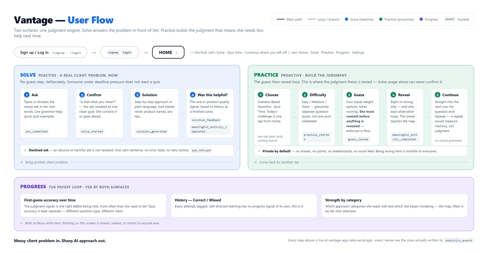
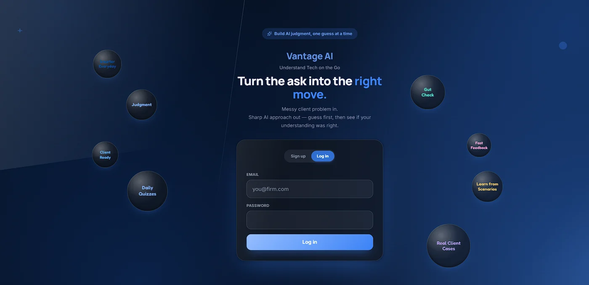
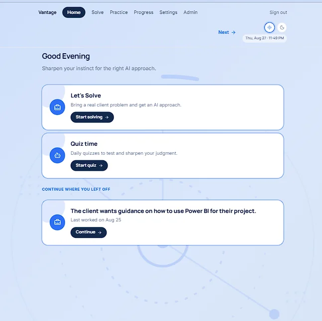
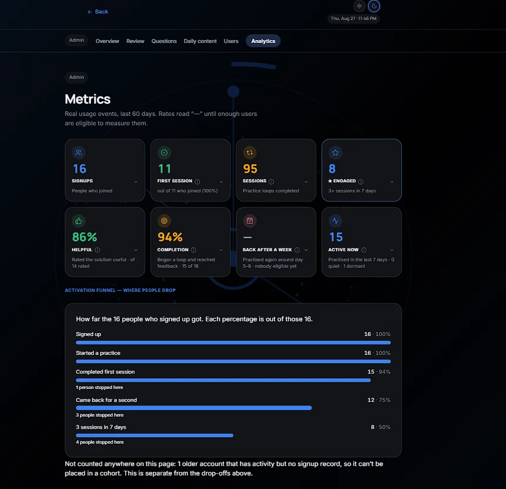

THE CURIOUS CHARVAKAS
Product Requirements Document
Week 4 · Learning Tech & AI for non tech professionals
Building - and shipping - an MVP for Tech & AI Learning Platform for non tech professionals
Prepared by Manyata Manocha
Contents
|
1. The Given Problem - Case Summary |
|
2. Stakeholder Mapping |
|
3. The Onboarding Workflow - How It Works Today |
|
4. Secondary Research |
|
5. Existing Tools - and the Seam They Miss |
|
6. Primary Research - Right-Sized for a Given Problem |
|
7. Opportunity & Prioritisation |
|
8. Product Strategy - User, Buyer, Problem Statement |
|
9. Solution Ideation & Direction |
|
10. Product Detailing & MVP Scope |
|
11. UX & Product Design |
|
12. Analytics & Event Tracking |
|
13. Build & Deployment |
|
A. Appendix A - Ship-Ready Pressure-Test |
|
B. Appendix B - The PM Prompt (turn the team's work into this PRD) |
- The Given Problem - Case Summary
Non-technical professionals are expected to work with AI every day, and the market's answer has been content — courses, videos, certifications — which leaves them intimidated, overwhelmed by choice, and unable to convert what they watched into capability they can use at work. The market is not short of content; it is drowning in it (4,500+ platforms in India alone). India is where the gap shows sharpest: 95% of Indian frontline white-collar workers use AI weekly against 74% globally (BCG), and India tops global GenAI course sign-ups — while free, credible, national-scale content completes at under 5% (§4). Adoption is finished. Capability did not follow. The battleground this PRD picks is therefore not "teach people AI." It is the gap between using AI and judging it.
The problem, as the case states it:
Non-technical professionals must now work with AI. Existing content-heavy platforms leave them overwhelmed and unable to build real capability.
The real question this PRD answers — the case hands us the problem, so the open question is not discovery, it is scope and proof:
What should the FIRST version solve for one specific professional, and how will we know it worked once it is live in front of real users?
Vantage's answer: build a consultant's judgment for mapping a client problem to an AI-approach category. The mechanic is guess-before-reveal. The measure is repeated practice (Weekly Engaged Learners), not content consumed. Vantage moves that one step to the front: bring a real client problem to Solve and get a structured, plain-language approach; build the judgment separately in Practice, where you must commit to an approach before the answer is revealed. We are not building another course. We are building the judgment a course never checks.
The battleground — why a client-facing consultant, not "non-technical professionals." "Non-technical professionals" is a market, not a user. Nine interviews across eight roles (§6) surfaced the same stall in different clothes; the consultant is the one where it is highest-stakes (her output reaches a paying client), highest-frequency (the trigger recurs weekly, not quarterly), and — decisively for a 9-day build — gradable: "which AI approach fits this problem" has a defensible answer key, where "was this a good prompt" does not. That is an evidence-led cut, and §7 defends it against the better-evidenced alternative.
The tension the case names, made concrete for her:
Information abundance vs directional paralysis — they can find a thousand AI resources and still not know which approach fits the brief on her desk.
Using AI vs judging AI — they produce client-ready work with ChatGPT but cannot tell whether the approach was right or merely fast.
Passive consumption vs practical capability — ten hours of AI content later, they still freeze on a genuinely novel problem.
Sporadic consumption vs habit-forming retention — they learn in bursts when a problem lands, and retains nothing in between.
For a client-facing consultant in India, early-career (0–8 years), already comfortable using AI — the hold-up is they cannot reliably tell which AI approach fits the client problem in front of her — because her confidence with AI comes from repeating familiar tasks, not from understanding how different approaches map to different problems.
2. Stakeholder Mapping
Vantage is self-serve. The learner is the user and the buyer.
Decided, not assumed: they is both user and buyer. Nothing in the research shows a manager requiring this or a firm budgeting for it — the pressure to get better is self-driven and career-protective. That rules out a paid-seat model for v1; it's free.
|
Who |
What they want |
Why they matter here |
Influence |
Role |
|
The consultant |
Client work that doesn't reveal a gap in her skills |
They have to be willing to answer wrong and see it, in private |
High |
User and buyer |
|
Her engagement lead |
Work that meets the firm's standard |
Reviews her output; they want to catch her own mistakes before he does |
High |
Influencer |
|
The client |
The result, not how it was produced |
Never uses Vantage, but the client relationship is what makes a wrong approach expensive |
Medium |
Beneficiary |
|
Peers |
To be helpful, and to get help back |
Asking a colleague is what they do now, so that is what this product has to beat |
High |
Existing alternative |
|
Firm L&D |
Training compliance, group rollouts |
Not paying for v1. Worth revisiting later if firms want to buy for teams |
Low (v1) |
Deferred |
|
The question bank and its review gate |
Questions that are fair and correct |
Every right-or-wrong answer they sees comes from here, so its accuracy is the product's credibility |
High |
Internal system |
The competitor most products here overlook is the colleague they already asks. Courses give her content and chatbots give her answers, but when they is actually stuck her first move is to ask someone at her firm. So this product is not competing with other courses — it is competing with a free, fast, trusted person. §4 covers why that route fails her specifically for AI questions.
3. The Current Learning Journey - How Professionals Try to Learn Tech & AI Today
|
Step |
Stage |
What they do |
Where it breaks down |
|
1 |
Trigger |
A new client problem comes up in a meeting |
Happens weekly, so the cost repeats |
|
2 |
Reach for the familiar |
Tries the AI approach that worked last time |
Fine when the problem is similar; no help when it is genuinely new |
|
3 |
Ask a peer |
Asks a colleague what they would do |
Costs her some standing, and the colleague may be guessing too |
|
4 |
Self-serve |
Reads articles or watches videos |
These teach specific tools, not which approach suits which problem |
|
5 |
Stall ← the stage v1 attacks |
Gets stuck on "which approach even fits this?" |
Nothing available answers this cheaply and privately |
|
6 |
Default |
Uses a general AI tool anyway and reworks the output |
Produces work that needs heavy editing, and they learns nothing for next time |
Symptom vs. root cause. The symptom: they keeps asking AI or a colleague for the same kind of judgment call. The root cause, from her own words (section 6): her confidence comes from repeating familiar tasks, not from understanding how approaches map to problems. A new problem gives her nothing to sort it into. A faster chatbot answer treats the symptom and repeats the root cause. It adds one more round of ask AI, take the answer.
4. Secondary Research
Market size and the capability gap
- 88% of enterprises use AI in at least one function. Only about 1% have reached real AI maturity, an estimated $5.5T in unrealised productivity (IDC). So what: the gap is applied judgment, not tool access.
- India: 95% of frontline white-collar workers use AI weekly vs. 74% globally (BCG); 80% weekly, 41% daily, the highest rate globally (ADP). So what: India is not an early market for this problem. It is the market where the post-adoption capability gap is already visible at scale.
- India also leads in AI pilot failure: 38% vs. 28% globally (Salesforce). So what: high adoption without judgment produces failure, not competence.
Why content-first approaches fail
- SWAYAM, India's free, government-backed, IIT-quality MOOC platform, has under 4% completion since 2017, flagged by a Parliamentary committee. So what: cost, trust, quality and access were all controlled for, and it still failed at 96%. The delivery model is wrong, not the learners.
- 62% of knowledge workers struggle to retain training even when they felt confident during it (Instructure). People forget about 70% of passive learning within 24 hours. So what: reading an answer creates false mastery. A chatbot's direct answer reproduces this exact failure.
Why active recall is the mechanism, not a design preference
- Reconstructing an answer beat reading a given answer for durable retention (multiple studies, group synthesis and Vantage's own Hypothesis.md). So what: this is the evidence base for guess-before-reveal. It is a retention mechanism, not a gamification add-on.
- Deslauriers' active-classroom study: students in active classes learned more but felt they learned less, and rated passive lectures higher. So what: a user preferring a faster chatbot answer is not evidence that the answer builds judgment. It may show the opposite.
Rework cost of the wrong tool-class choice
- 49% of general-purpose-AI users report significant rework needed, vs. 29% for specialised-tool users (BCG). So what: this supports Vantage's tool-class tier, general-purpose vs. specialised, sitting between category and named product. Category alone misses a choice that measurably drives rework.
5. Existing Tools - and the Seam They Miss
Everything they could use today, and where each one stops.
|
Option |
Examples |
What it does well |
Where it stops |
|
A colleague |
The person they actually ask |
Fast, free, knows her context |
Costs her standing (42% are embarrassed to ask); the colleague may be guessing too; not always free to help |
|
General AI chatbots |
ChatGPT, Claude, Gemini |
Instant, flexible, already open on her screen |
No right answer to check against, and it agrees with her by default. It answers the question instead of building her judgment — which is the habit that left her stuck |
|
AI literacy courses |
Coursera, DeepLearning.AI, LinkedIn Learning |
Vocabulary, a credential |
Teach tools rather than categories, never check her own judgment, and almost nobody finishes them |
|
Firm-internal training |
Consulting firm L&D |
Relevant to her firm, and mandatory so it gets done |
Generic and occasional. Clients want AI used but rarely say how (§4 #4), so firm training is not filling the gap |
|
YouTube and blogs |
— |
Free, available whenever they need them |
No structure, and organised around whichever tool is current |
|
Prompt libraries |
Prompt packs, templates |
Immediately better output |
Solves prompt-writing, not approach-selection. Gives her the answer without teaching her how to choose |
What none of them do: help her take a problem they have never seen before, decide which AI approach fits it, and find out whether they was right — privately, before a client sees the work.
Why this gap survives even though everyone has a chatbot. A chatbot will tell her which approach to use straight away. What it will not do is refuse to answer until they have committed to her own answer first. It has no reason to withhold, no correct answer to withhold, and no memory of whether her judgment is improving over time. That withholding is the entire structural difference here.
6. Primary Research - Right-Sized for an Open Problem
How it was done
Nine semi-structured interviews, conducted by me, across eight roles in eight different organisations. Each one was anchored on the last real occasion that person tried to learn or apply a tech or AI skill at work — what they tried, where they stopped, why — rather than what they would say they generally do.
The order was deliberate, and it is why the persona in §8 is narrow: interview across several candidate segments first, then choose one. The consultant was not the starting assumption. They are where the nine conversations pointed.
Participants are described by role, sector and experience only. Names and employers are withheld; the interviews were given in confidence.
|
# |
Role and sector |
Experience |
Why they were in scope |
|
1 |
Consultant, top-tier strategy firm — non-technical, client-facing |
~3 yrs |
The anchor interview. Became the locked persona |
|
2 |
Operations manager, consumer business |
— |
Process-heavy corporate role: does AI fluency matter here? |
|
3 |
Finance executive / senior analyst |
— |
Daily AI user, entirely self-taught |
|
4 |
HR business partner, talent acquisition |
— |
Lowest technical comfort in the set, heavy ChatGPT use |
|
5 |
Product manager, tech |
3 yrs |
Works with engineers daily; medium technical comfort |
|
6 |
Data analyst |
2–3 yrs |
Highest technical comfort — a deliberate contrast case |
|
7 |
Banking professional, multinational bank |
3 yrs |
Employer supplies in-house tools; does that remove the need to learn? |
|
8 |
Category manager, e-commerce marketplace |
8 yrs |
Mid-career, actively wants to learn, has a company learning budget |
|
9 |
Account manager, media broadcasting |
7 yrs |
Employer had already bought and trained people on AI tools |
Alongside this sits a small internal survey (n=3, two product owners and a consultant, 6–10 years' experience, all non-technical roles at tech companies). It is explicitly directional and not representative, and nothing in this document rests on it alone.
What came out of it
Findings are labelled by how far the evidence travels:
SAW — a participant said it, in their own words
THINK — my interpretation of what they said
ASSUMED — no evidence; carried as a hypothesis
|
# |
Finding |
Evidence |
Confidence |
|
1 |
They cannot connect AI to a specific client problem |
Consultant, verbatim: "I know AI tools exist and I can use some of them, but help me understand how AI can actually be applied to the specific problem I am solving for my client" |
SAW — High |
|
2 |
They do not trust AI output enough to hand it to a client unchecked |
Consultant, verbatim: "AI can do the drafting, but the human overlay is still important" |
SAW — High |
|
3 |
People learn AI from colleagues, not from training |
Media account manager: "people take help of others to learn and adapt with AI" — stated as a general pattern across his organisation, not a personal preference |
SAW — High (independent of the persona) |
|
4 |
Being trained on a tool does not produce confident use of it |
Media account manager: his employer bought AI tools and trained staff, yet "adoption is uneven — some employees actively use the tools, while others struggle to implement them" |
SAW — High. The cleanest evidence that content and training are not the constraint |
|
5 |
Her confidence comes from repetition, not from understanding |
My reading of the consultant interview — not her words. They described learning through repeated hands-on practice rather than any formal path. Independently supported by finding 8 |
THINK — Medium-High (interviewer's characterisation) |
|
6 |
The gap is matching an approach to a problem, not access to tools |
HR: "Mostly I don't know whether they're actually useful or just hype" → asked what would change that: "If someone showed me a very specific use case." Finance separately did not want to learn SQL, but wanted better use of tools already in her workflow |
SAW — Medium. Two participants, two segments, both unprompted |
|
7 |
Using AI without understanding it builds dependence, not skill |
Finance, asked directly whether they understood the formula AI gave her: "Somewhat. But honestly if it works, I'm okay." |
SAW — Medium. Was an assumption until a participant stated it plainly |
|
8 |
Learning starts only when it is attached to a work outcome |
Operations manager: "If you show me that something I'm spending 1–2 hours on every day can become 10 minutes, then I'll learn whatever is needed." He had already abandoned automation videos: "There wasn't a strong enough reason. I don't need it for my daily job right now." |
SAW — High |
|
9 |
Existing content is abundant and badly shaped for them |
E-commerce category manager: no idea where to go and learn, Udemy is "all package related", YouTube is "not structured, random" and "too much cluttered". He wants "a single, reliable source." His company offers a learning budget and he still does not use it |
SAW — High. Budget available and unspent is the strongest form of this finding |
|
10 |
People deliberately learn only what their current role demands |
Banking professional learned SQL because her tasks needed it, and nothing beyond that. Media account manager: "only learn what is related to work, rest we will see later" |
SAW — Medium-High, two segments |
|
11 |
Courses lose people who are not beginners |
Product manager started a technical course and stopped: "It was structured like a syllabus… some things were relevant, some weren't relevant immediately." Data analyst: "I don't really finish courses anymore. Usually they're slower than just trying something." |
SAW — Medium-High, two segments |
|
12 |
"Category" is our word, not theirs |
No participant used "category" or "approach type" for what they described |
THINK — Low. The vocabulary is ours; the problem is theirs |
What the wider set changed. Findings 6 and 7 were the weakest claims in the early thinking — 6 was our framing rather than a user's, and 7 had no user evidence behind it at all. Both now rest on something a participant said unprompted, from two different segments. They stay at Medium rather than High because neither person was the locked persona. Findings 3, 4 and 9 come entirely from participants who are not the persona, which is what makes them useful: they establish that the problem is structural rather than particular to one consultant.
What this research does not prove
The locked persona is one of the nine. The problem is evidenced across eight roles; the client-facing consultant specifically is a sample of one. Her weekly client cadence, her client stakes and her status costs all rest on a single conversation.
Nine is short of the 12–20 this case calls for. Treat the segment spread as directional. It was enough to converge on a persona; it is not enough to generalise to a population.
The sample skews early-career and urban. Six of the nine are under five years' experience, and none are in marketing, legal, or the public sector — a recruiting gap, not a finding.
"Category" is still our vocabulary. Participants described a matching problem. Calling it a taxonomy problem, and building a category map as the answer, is the largest interpretive step in this document.
Severity was never measured. The trigger recurs weekly, but what a wrong approach actually costs — an hour, a weaker deliverable, or nothing much — was never establitheyd.
The survey is n=3 and was not designed to test this problem statement. It is context, not proof, and no claim here depends on it.
Nobody was asked the decisive question. No participant was asked whether being made to guess would help them or annoy them. That can only be answered by behaviour, which is what §14 reports.
What it changed, and what is left to prove
Finding 1, combined with the status-cost data in §4, is what shaped the product: they has a real gap and nowhere safe to test herself. Findings 4 and 9 rule out the obvious alternative — an employer already bought tools, trained staff, and offered a budget, and none of it produced confident use. That is why this is a private commit-then-reveal loop rather than another content library.
The single assumption the pilot exists to settle is not whether the gap is real — nine people described versions of it. It is whether the fix works: does being made to guess actually build judgment, or does it just annoy people? No interview can answer that, because nobody was asked. Only behaviour can, which is why practice completion and first-guess accuracy are the first metrics watched in §12.
Where the evidence weight sits. The problem rests on nine interviews across eight roles. The persona rests on one of them. The fix rests on 17 external testers and 95 completed practice sessions (§14). Research located the problem; only behaviour tests the solution, and this document does not let one borrow the other's confidence.
7. Opportunity & Prioritisation
Everything §3 to §6 surfaced, written as for whom / through what / because it is still un-owned. The BECAUSE clause is the real test: if there is no explanation for why the gap survives despite everything that already exists, it is not a genuine opportunity.
|
ID |
Opportunity |
Value |
Effort |
Carry forward? |
|
O-1 |
Build transferable approach judgment — FOR a consultant who freezes on an unfamiliar problem, THROUGH commit-then-reveal practice, BECAUSE no existing tool refuses to answer until they have committed |
L |
M |
Yes — the thesis |
|
O-2 |
A private place to be wrong — FOR someone who will not ask a colleague, THROUGH a check with no social cost, BECAUSE asking carries a 42% embarrassment rate (§4) |
L |
S |
Yes — a property of O-1, not a separate build |
|
O-3 |
Turn a messy client ask into a clear one — FOR someone facing an ambiguous brief, THROUGH AI-refined restatement, BECAUSE every tool assumes they can already state the problem cleanly |
M-L |
S |
Yes — useful, but carries no judgment thesis |
|
O-4 |
Make improvement visible — FOR someone who cannot tell whether they is getting better, THROUGH accuracy trends over time, BECAUSE self-directed learning has no progress signal (§6 #11) |
M |
S |
Yes — retention mechanism, not the core |
|
O-5 |
Judge whether AI output can be trusted — FOR someone about to send AI-assisted work to a client, THROUGH a validation check, BECAUSE nothing marks her real output |
L |
L |
No — needs a validated rubric that does not exist |
|
O-6 |
Curate what to learn next — FOR someone lost among 4,500 platforms, THROUGH a filtered path, BECAUSE content is abundant and badly shaped (§6 #9) |
M |
M |
No — already solved socially, and no defensible moat |
|
O-7 |
Teach prompt structuring — FOR a consultant who mis-frames the ask, THROUGH prompt training, BECAUSE BCG found consultants fail at exactly this step |
L |
L |
No — no stable answer key (§1) |
How the scores were reached, so the table is not a black box.
Value = how much pain it removes × how hard it is to copy. O-1 and O-2 score L because they attack the one stage where they currently has no option at all (§3, step 5), and because withholding an answer is something a chatbot structurally will not do. O-6 scores M because the pain is real but a colleague's recommendation already solves it.
Effort = build cost in a nine-day sprint. O-1 is M because approach-selection can be marked against a pre-written question bank with no model training. O-5 and O-7 are both L because each needs a scoring rubric that would have to be invented and validated first.
Ties break toward the smaller build. O-2 has the same value as O-1 at lower effort — which is why it is delivered as a property of O-1 (the practice loop is private by default) rather than built as a separate feature.
The one bottleneck this version attacks
Seven candidates reduce to one. Naming the losers matters as much as naming the winner.
They cannot map an unfamiliar client problem to the right AI approach. Everything in v1 exists to move this, and nothing else.
Why this one:
It is the only opportunity that attacks the stall stage — the single point in §3 where her current process offers her nothing.
It is structurally defensible. The advantage is withholding the answer, which a chatbot will not do and a colleague cannot do without her paying a social cost.
It is markable in three minutes. A judgment can be graded; a piece of produced work cannot, not cheaply.
Why not prompt structuring (O-7)? Stated openly, because there is real evidence in that direction: BCG's 758-consultant experiment found AI made consultants 19% less likely to be correct on tasks outside its reliable range. It loses for two reasons. There is no stable answer key, since prompt craft changes with every model release and any content built on it decays. And it cannot be marked cheaply: "was this a good prompt" needs a rubric that does not exist. This is choosing the defensible problem over the loudest one, and it is a decision rather than an oversight.
Why not the most-felt pain (O-5, trust)? The trust gap is arguably the persona's strongest quote — "the human overlay is still important." It is deferred for one reason: measuring "can I trust this output" credibly requires a validated rubric and questions of comparable difficulty. Without both, the product would be inventing a confidence score and presenting it as fact. It is named in §10, not dropped.
Sizing the wedge, not the category
The §4 figures size the whole category — every Indian knowledge worker using AI. The wedge is narrower and is estimated directionally rather than borrowed from that number.
India has roughly 600,000–800,000 people in client-facing consulting and professional-services roles. The target is the early-career (0–8 years), non-technical slice already using AI on real client work — conservatively 25–35% of that, or about 180,000–250,000 people with this specific gap. (Directional estimate from industry headcount reporting, not a commissioned market study.) Round 1's cohort against that number is reported in §14.
The line from evidence to metric
Consultant interview (§6 #1) + status-cost data (§4)
→ Insight: they has a real gap and no safe place to test herself
→ Pain: the stall — "which approach fits?" goes unanswered (§3, step 5)
→ Bottleneck: cannot map an unfamiliar problem to an AI approach (§7)
→ Solution: withhold the answer until they commits (§9)
→ Feature: guess-then-reveal practice loop (§10)
→ Metric: practice completion + first-guess accuracy (§12)
8. Product Strategy - User, Buyer, Problem Statement
This is the lock point. Everything after this section is detailing, not a change of direction.
User and buyer — decided, not assumed
User = buyer. Pure self-serve. v1 is free.
This was decided rather than inherited from habit. The case does not hand over a B2B structure, so the question had to be answered from evidence: the pressure to get better is self-driven and career-protective, and §4 shows employers are not supplying the guidance — clients want AI used, under 20% say how, and nobody is teaching her which approach fits which problem. There is no credible L&D buyer to serve in a first version.
The interviews reinforce it from the other direction. The e-commerce category manager has a company learning budget and does not use it; the media account manager's employer bought AI tools and trained staff, and adoption was still uneven (§6 #4, #9). Employer money and employer training are both already present in this market and neither converts. Selling to the employer would be selling into a channel the research shows does not work yet.
Persona — the fluent stall
Non-technical, client-facing consultant in India. Early-career, 0–8 years. Uses AI daily as augmentation rather than delegation — comfortable with tools like Cursor and Databricks, learned by repeated hands-on practice rather than through any formal path. Meets clients weekly, so unfamiliar problems arrive at that rate. When they is unsure, they asks a colleague first, then reads or watches something.
They is not a beginner. That single fact rules out beginner framing, rules out teaching her tools they already uses, and is why the product opens with a question rather than a lesson.
What "capable" looks like to her: being able to look at a client problem they has not seen before and say which kind of AI approach fits it — without asking anyone, and without finding out they was wrong only after the work reaches a client.
How the problem statement narrowed
The starting hypothesis, written before the interviews, was broad:
"Professionals lack a personalized, practical way to understand what AI can reliably do for their specific work and apply it confidently."
Three things in the interviews narrowed it, and each narrowing is traceable:
|
What changed |
What forced it |
|
"Professionals" → a client-facing consultant |
The same stall appeared in eight roles, but only the consultant's version was high-stakes (client-facing), high-frequency (weekly) and gradable ("which approach fits" has a defensible answer; "was this a good prompt" does not) |
|
"Personalized path" → judgment on a single decision |
A personalised path is still content, and §6 #4 and #9 show content is not the constraint — an employer bought tools and trained staff, a company budget went unspent, and neither produced confident use |
|
"Apply it confidently" → tell which approach fits, before acting |
Confidence was the symptom. The anchor interview located the actual missing step: not using AI, but knowing which kind of AI approach a new problem calls for (§6 #1) |
The final statement is the descendant of the original, not a replacement for it. What survived is the observation that generic content does not connect to real work. What changed is who it is for, and which single decision it fixes.
The locked problem statement
For a client-facing consultant in India, early-career (0–8 years), who already uses AI daily, the biggest hold-up is they cannot reliably tell which AI approach fits the client problem in front of her, because her confidence with AI comes from repeating familiar tasks rather than from understanding how different approaches map to different problems, which matters because a new client problem gives her nothing to sort it into, so they guesses — and the cost of guessing lands on billable client work, every week.
Every clause is earned. The hold-up and the "because" come from the anchor interview (§6 #1, #5). The weekly frequency is stated directly by the same participant. The "nothing to sort it into" clause is my inference and is labelled as such in §1.
The core bet, stated so it can be proven wrong
If they commit to a guess about which approach fits before they are shown the answer, then they build a map they can apply to a problem they have never seen, unaided, because actively recalling an answer produces durable learning where recognising one does not.
The four sub-bets, and what would kill each:
|
Belief |
Confirmed by |
Killed by |
|
|
H1 |
People will accept being made to guess |
Completion holds up |
Lots of starts, few finitheys |
|
H2 |
Practice becomes a habit |
Users return across days; a real share reach 3+ sessions a week |
They complete once and never come back |
|
H3 |
Solve feeds Practice |
Solve users later complete Practice sessions |
Two products sharing a login |
|
H4 |
Judgment actually improves |
First-guess accuracy trends upward per user |
Accuracy stays flat across attempts |
§14 reports where each of these currently stands.
The success metric this is ultimately judged on
They correctly identify the right AI-approach category for a novel problem, unaided, within a defined timeframe.
"Novel" and "unaided" carry the weight. They are what separates judgment transferred to her from Vantage answered it once.
Locked scope
In: buckets 1 and 2 (UNDERSTAND, CHOOSE) — deciding what AI can do for a problem and which approach fits it, delivered through two surfaces (Solve for the problem in front of her now, Practice for the judgment that means they needs less help next time).
Out: buckets 3, 4 and 5 (STRUCTURE, VALIDATE, APPLY), named product recommendations, any employer or L&D layer, payments, and social or competitive features.
Locked on 23 August 2026 — problem, persona, scope. Everything after this section is detailing, not pivots.
The decision spine — every major call in this document
This is the lock point, so this is where every decision is recorded in one place. Each row names a decision, the evidence that forced it, and the finding that would reverse it. Rows 6–10 are settled in §12–§14; they are listed here because this is where the commitment was made, and nothing downstream contradicts this table.
|
# |
Decision |
What forced it |
What would reverse it |
|
1 |
Scope to buckets 1–2 (UNDERSTAND / CHOOSE), exclude 3–5 |
Category judgment is markable in 3 min; prompt craft has no stable answer key |
A durable, gradable rubric for prompt quality appears |
|
2 |
The user is the buyer; v1 free, no L&D layer |
Pressure is self-driven; clients want AI used but under 20% say how (§4 #4) |
A firm offers to buy seats for a cohort |
|
3 |
Attack the stall at step 5, not search or consumption |
It is the only step with no existing option at all (§3) |
Users report they stop at step 2 or 4 instead |
|
4 |
Withhold the answer until they commit |
Active recall beats recognition (§4 #6); it is the one thing a chatbot structurally will not do |
Completion collapses at the guess step (H1 falsified) |
|
5 |
Private by default — no streaks, points, leaderboards |
42% embarrassed to ask colleagues; 1 in 4 hide AI use (§4 #5) |
Users ask for social or competitive features |
|
6 |
NSM = Weekly Engaged Learners, an absolute count |
A ratio would show growth during a decline (worked example, §12) |
Nothing — this one is arithmetic, not opinion |
|
7 |
NSM threshold ≥3 sessions, not ≥1 |
The promise contains repetition, so the metric must too |
Cohorting 1 / 2 / 3+ / 5+ against D30 shows a different break point |
|
8 |
Seeded, human-reviewed banks over live generation |
Latency inside a timed loop; no fairness guarantee on an unreviewed question |
Generation gets fast and reliable enough to review in flight |
|
9 |
No Skill Improvement Rate score |
Without a validated rubric it would look precise but mean nothing real |
A validated rubric with comparable difficulty exists |
|
10 |
Behaviour is the honest proxy for judgment, for now |
H4 needs cross-day data that does not yet exist |
Round 2 produces a per-user accuracy trend |
9. Solution Ideation & Direction
Three genuinely different shapes were considered, not one idea written three ways.
|
Direction |
User value |
Effort |
Risk |
Verdict |
|
|
A |
A better AI assistant — they describe a problem, it recommends an approach and explains why |
Immediate, familiar, obviously useful |
S |
Competes directly with free ChatGPT, and structurally repeats the problem — one more round of "ask, receive" |
Rejected |
|
B |
A course on AI approach categories — structured lessons and worked examples |
Fills the actual knowledge gap |
M |
Content is not the constraint (§4 #1, §6 #4 and #9). Consumption does not become capability, and completion rates for free quality content are catastrophic |
Rejected |
|
C |
⭐ Commit-then-reveal judgment practice — they pick which approach fits, then sees the answer and why the alternatives lose |
Builds the missing judgment directly; private, no social cost |
M |
Will people tolerate being made to guess? This is the core bet |
Chosen |
Why C wins. It is the only direction with a structural advantage. A chatbot cannot withhold an answer — it has no reason to disagree with the user and no correct answer to withhold. C is also the only shape that implements §4 #6 literally: judgment is the markable unit, and committing before the reveal is the cheapest way to force recall.
Why the others lost. A would deepen the exact dependence the problem statement identifies — they would get faster answers and no better judgment. B fails on evidence already gathered: an employer bought AI tools and trained staff and adoption stayed uneven; a category manager has a learning budget he does not spend. Adding more content to that picture changes nothing.
The trade-off C forces, accepted openly. Being made to guess is friction, and someone under client deadline pressure does not want a quiz. So the product splits into two surfaces:
|
Surface |
The job it does |
Mechanic |
|
Solve |
"Help me with this client problem, now" |
Ask → pick the wording → step-by-step solution. No guess step |
|
Practice |
"Build my judgment so I need less help next time" |
Guess, then reveal |
The consequence, stated because it governs how §12 is read: the judgment thesis lives in Practice only. H1, H2 and H4 are tested by Practice usage specifically. Solve usage on its own can never confirm the thesis.
One further rule. Vantage names categories, never products — "this is a classification problem," not "use Tool X." Named tools change constantly; categories are stable enough to build a mental model on. A tool-class distinction (general-purpose versus specialised) sits between them, justified by §4 #2.
End-to-end user flow

Vantage user flow
Today versus tomorrow:
|
Today |
With Vantage |
|
A new client problem arrives; they reach for whichever AI move worked last time |
They meet the same kind of problem in practice first, where being wrong costs nothing |
|
Asks a colleague, and pays a small status cost for it |
Answers privately; nobody sees her guess |
|
Reads or watches something that teaches a named tool |
Sees which category of approach fits, and why the others do not |
|
Uses a general tool anyway, reworks the output, learns nothing for next time |
Gets the solution they need now from Solve, and builds the judgment separately in Practice |
|
No way to tell whether they are improving |
First-guess accuracy over time, visible only to her |
The step that matters most is `practice_started` → `meaningful_activity_completed`. If people abandon at the guess, the core mechanic is being rejected — and that is the single most valuable thing this product could learn.
10. Product Detailing & MVP Scope
Features — each tied to a flow step and the evidence that earned it
Classified by product value: Must-have (the product is broken without it), Performance (more is better), Delighter (unexpected value).
|
Feature |
Flow step |
What earned it |
Value type |
Effort |
Version |
|
Guess-then-reveal practice loop |
Practice 3–4 |
§7 bottleneck; §4 #6 active recall |
Must-have — the core |
M |
V1 ✅ |
|
Scenario questions — 90 seeded real-work scenarios |
Practice 1 |
§6 #1 — applying AI to a specific client problem |
Must-have |
M |
V1 ✅ |
|
Quiz Time — 120 concept questions |
Practice 1 |
§6 #6 — the category map they lack |
Must-have |
M |
V1 ✅ |
|
Reveal explains why each alternative loses |
Practice 4 |
§4 #6 — the richest form of recall |
Must-have |
S |
V1 ✅ |
|
Difficulty routing to genuinely separate pools |
Practice 2 |
§6 — they are not a beginner; beginner framing would misfire |
Performance |
S |
V1 ✅ |
|
No-repeat guarantee |
Practice 5 |
Integrity — a repeated question measures memory, not judgment |
Must-have |
S |
V1 ✅ |
|
Ask → pick the wording (hers or the AI's) |
Solve 1–2 |
§6 #1 and O-3 — never demand a clean input, and never silently rewrite it |
Must-have |
M |
V1 ✅ |
|
Step-by-step solution, tool classes, |
Solve 3 |
§3 step 6 — the immediate need, honestly served |
Must-have |
M |
V1 ✅ |
|
pro tips |
Solve 3 |
Additional information |
Delighter |
M |
V1 ✅ |
|
Voice dictation and live grammar help |
Solve 1 |
§8 persona — non-technical, messy real asks |
Performance |
M |
V1 ✅ |
|
"Was this helpful?" rating |
Solve 4 |
§12 — the only in-product quality signal |
Must-have (metrics) |
S |
V1 ✅ |
|
First-guess accuracy over time |
Progress |
O-4; H4 needs a per-user trend |
Must-have |
M |
V1 ✅ |
|
History — every attempt tagged Correct / Missed |
Progress |
O-4 — self-directed learning has no progress signal (§6 #11) |
Performance |
S |
V1 ✅ |
|
Private by default — no streaks, points or leaderboards |
All |
§4 #5 — the 42% embarrassment rate. Privacy is the product |
Must-have (integrity) |
S |
V1 ✅ |
|
Admin analytics dashboard |
Internal |
Activation has to be discovered, not assumed |
Must-have (pilot) |
M |
V1 ✅ |
|
Content pipeline with human review gate |
Internal |
Generated questions must not reach a learner unchecked |
Must-have (integrity) |
M |
V1 ✅ |
|
Light and dark theme, settings |
All |
Table stakes |
Delighter |
S |
V1 ✅ |
|
Automatic question generation and approval |
Internal |
Review-by-hand does not scale past a pilot (§13) |
Performance |
L |
V1.1 ❌ |
|
Lightweight rating on the reveal step |
Practice 4 |
§12 — closes the rating-coverage gap |
Performance |
S |
V1.1 ❌ |
|
Skill Improvement Rate scoring |
Progress |
Needs a validated rubric |
Performance |
L |
V1.2 ❌ |
|
Share and invite |
— |
No evidence earned it, and it conflicts with the privacy principle |
— |
M |
Cut ❌ |
The MVP in one line: a working web app where a client-facing consultant can bring a real client problem and get a structured plain-language approach — and, separately, practise AI-approach judgment through guess-then-reveal exercises that build the skill instead of just answering the question.
Information architecture
/ Landing → sign up / log in
├── /home The fork: Solve · Practice · Progress
├── /solve
│ ├── /new Ask, then pick which wording is solved
│ └── /[id]/solution Steps, tool classes, pro tips, rating
├── /practice Two top-level cards: Scenario · Quiz
│ └── /[surface] Difficulty → guess → reveal → continue
├── /progress Accuracy over time · strength by category
│ └── /history Every attempt, Correct / Missed
├── /settings Theme, practice preferences
└── /admin (admin accounts only)
├── /analytics Eight metric tiles + activation funnel
├── /questions Question bank
├── /quiz-review Human review gate
├── /daily-content Pipeline output by day
└── /users Signups, active / quiet / dormant
They always knows where they is because the two surfaces never mix: Solve is always about the problem in front of her, Practice is always about the judgment behind it, and Progress only ever reports on her own attempts.
Edge cases and failure states
Every view has a loading, empty, error and success state. Empty is designed, not an accident.
|
When… |
The product… |
Why it matters |
|
The ask is off-scope or unanswerable |
Raises a typed refusal and shows one calm app-owned sentence. Three separate refusal shapes are handled — a refusal field, an error object, and a refusal that breaks the response format entirely |
A declined ask is a normal outcome, not a crash. The framework hides server errors in production, so throwing would show a generic message and they could not tell refusal from breakage |
|
The ask is empty or too short |
Shows a validation message and makes no model call |
Never spend a call on nothing |
|
A difficulty pool runs out of questions |
Shows "No new questions left" (scenario quiz: "No new scenarios left"), naming the difficulty they has finished and pointing her at another tier |
The no-repeat guarantee makes exhaustion inevitable, so this needs a written state rather than a blank screen. Verified in the shipped code on both quiz surfaces |
|
The model call is slow or fails |
Fails fast with a clean retry message; token limits are sized per task with an explicit check on why generation stopped |
A truncated answer is worse than an honest failure |
|
Analytics logging fails |
Ignores it — logging is fire-and-forget |
An analytics error must never break the feature it measures |
|
A metric has an empty denominator |
Renders "—", never 0% |
"Not yet measurable" and "failing" are different claims |
|
Generated content has not been reviewed |
Blocks it — nothing generated reaches a learner unapproved |
The question bank is the product |
|
An unauthenticated request hits the API |
Returns 401; row-level security means they can only ever read her own rows |
Verified in production |
|
The admin account uses the product |
Excludes it from every analytics figure |
Otherwise the builder inflates her own usage numbers |
Deliberately not building
Buckets 3–5 (STRUCTURE, VALIDATE, APPLY) — reasoning in §1 and §7.
Named product recommendations — categories are stable, named tools churn.
Share and invite — designed in the mockup, never built. There is no referral backend, which is why referral rate is absent from §12, and it sits in genuine tension with the privacy principle.
Payments — a free v1 has no runtime cost to protect; payments would be pure friction.
Any employer or L&D layer — §8, and §6 #4 and #9 show employer-supplied tools and budgets are not converting.
11. UX & Product Design
Six components of great UX — self-check
Scored from the Round 1 pilot (17 external testers, unaided, no onboarding call), not from opinion. Where something was not measured, it says so.
|
Component |
How it is judged |
Evidence |
|
Usability |
% who complete the core task with no help |
88% — 15 of 17 completed a meaningful activity unaided. Of those who began a guess-then-reveal loop, 100% finished it |
|
Efficiency |
% who finish within the target time |
Not instrumented. Session duration was not captured in Round 1 — a real gap, and a Round 2 event |
|
Perceived effort |
How heavy the product feels |
Low by design — one primary action per screen, four steps from home to first reveal. Not separately measured |
|
Credibility |
Trust cues, no broken states |
Every question passes a human review gate; four states on every view; empty denominators render "—" rather than a misleading 0% |
|
Delight |
One moment of unexpected value |
The reveal does not just mark the answer — it explains why each alternative loses. The moment testers engaged with most |
|
Simplicity |
Clicks to reach the outcome |
4 — Home → Practice → surface → difficulty → guess → reveal |
|
Accessibility |
Usable on a real device, not just a resized browser |
Verified on a physical phone — layout, tap targets and the timer all held |
The honest weak row is Efficiency. The honest structural weakness is discoverability: only 2 of 17 testers reached the scenario quiz (§14). Both are named here rather than left for a reviewer to find.
12. Analytics & Event Tracking
The full loop — acquisition to referral
The template asks for the whole AARRR funnel, not just the middle of it. Stated honestly, including the stage that does not exist:
|
Stage |
Metric |
Round 1 reading |
State |
|
Acquisition |
Signups ÷ people asked |
17 signups from direct outreach — DMs to consultants and cohort peers, WhatsApp professional groups |
Measured, not repeatable. A manual push, not a channel (§14) |
|
Activation |
First Value Rate — first meaningful session within 24h ÷ eligible signups |
88% (15 of 17) |
✅ Instrumented |
|
Retention |
D2 / D7 / D30, week-over-week engaged learners |
D-N cohorts render "—" — nobody has aged into eligibility |
✅ Instrumented, no data yet |
|
Referral |
— |
No number, because there is no system. Share & invite was designed and cut (§10), so there is no referral backend to instrument |
❌ Absent by decision |
|
Revenue |
— |
Out of scope: v1 is free and the user is the buyer (§8) |
❌ Out of scope |
Two of the five are honestly empty, and that is the reading. Referral is a missing feature, not a missing query — instrumenting it would measure a button that does not exist. Acquisition has a real number but not a real channel, which §14 states plainly rather than dressing a favour from a personal network as a growth loop.
North Star
Weekly Engaged Learners (WEL) — unique learners completing ≥3 meaningful practice sessions in a rolling 7 days. A meaningful session requires the learner to submit her own judgment and complete the feedback/reveal loop.
Why an absolute count, never a ratio. The tempting alternative — "% of active users practising 3+ times" — fails because the denominator moves:
|
Weekly active |
Power users |
Ratio |
|
|
Month 1 |
100 |
30 |
30% |
|
Month 2 |
50 |
30 |
60% |
The ratio doubled while the product reached the same 30 people and lost 50. A dashboard built on that ratio would show growth during a decline.
Why ≥3, not ≥1. One session delivers some value but does not achieve the promise — capability through repeated practice. Since the promise contains repetition, the metric must too. Three is an explicit hypothesis, to be validated by cohorting 1 / 2 / 3+ / 5+ against D30 retention.
Why the NSM is not the outcome metric. Measuring "judgment improved" credibly needs comparable difficulty, a validated rubric, and evidence the score tracks skill rather than quiz-gaming. Without those, an improvement percentage would look precise but mean nothing real. Behaviour is the honest proxy until then.
The sharpest objection to this NSM, and the answer. A count of completed sessions has no user-value term in it — so in principle WEL could rise while the product got worse, the way a usage metric always can. The clean fix used elsewhere is to multiply by a satisfaction rating ("sessions rated 4–5★"). Vantage cannot do that in Practice without breaking the product: a rating prompt after every reveal is exactly the kind of interruption that would depress the completion rate H1 is being tested on, and a learner who was just told they guessed wrong is the worst-placed person to rate the question fairly. So the value term is carried by three things instead, and WEL is never reported alone:
|
The failure a rating would catch |
What catches it here |
|
Engagement rising while quality falls |
Solution Helpful Rate (Solve does carry an explicit rating — 12/14 helpful in Round 1) |
|
Questions unfair, unlearnable, or gamed |
First-guess accuracy floor — near-chance accuracy means engagement is measuring frustration |
|
A rate quoted off too few responses |
Rating coverage — the denominator has to be real before the number is a claim |
That is a deliberate trade, not an oversight: rating coverage is the honest weak point of this stack, because only one of the four surfaces asks. Adding a lightweight rating to the reveal — after the streak of questions, never between them — is the first Round 2 instrumentation change.
The stack
Every row states its arithmetic and what a reviewer should conclude from it. A metric whose "tells us" column cannot be written in one plain sentence does not belong on a dashboard.
|
Layer |
Metric |
Measure (A ÷ B) |
Tells us |
|
⭐ NSM |
Weekly Engaged Learners |
Count, not a ratio: unique users with ≥3 meaningful sessions in a rolling 7d |
How many people the product is actually building judgment for this week |
|
Activation |
First Value Rate |
Users completing a first meaningful session within 24h ÷ signups eligible (24h elapsed) |
Does signing up turn into doing — the first place a learning product dies |
|
Leading |
Practice Completion Rate |
Learners reaching the reveal ÷ learners who began a loop |
The H1 number. Do people accept being made to guess, or bail at the commit step |
|
Leading |
D2 Return Rate |
Activated users practising again 36–60h after first value ÷ activated users whose bracket has elapsed |
Whether the loop pulls anyone back unprompted — the earliest habit signal |
|
Leading |
Practice Start Rate |
Activated users starting another practice within 7d ÷ activated |
Whether the first session was an experiment or the start of a pattern |
|
Lagging |
Week-over-week Engaged Learners |
Learners with ≥1 meaningful session this week ÷ last week's |
Durable value, and the only retention number that renders from day 8 — no cohort has to age first |
|
Lagging |
D7 / D30 Retention |
Activated cohort meaningfully active around day N ÷ cohort |
Whether judgment practice survives the week the novelty wears off |
|
Lagging |
4-week Habit Retention |
WEL in week 4 ÷ WEL in week 1 |
Whether the engaged core holds, not just the casual edge |
|
Supporting |
Practice Conversion Rate |
Users completing ≥1 meaningful session ÷ users who started one |
How much of the drop-off is the mechanic versus the funnel around it |
|
🛡 Guardrail |
Solution Helpful Rate |
Solutions rated helpful ÷ solutions rated |
Catches the failure WEL cannot see: engagement rising while quality falls |
|
🛡 Guardrail |
First-guess accuracy floor |
First guesses correct ÷ first guesses, against 25% chance on 4 options |
If accuracy sits near chance the questions are unfair or unlearnable — engagement would be measuring frustration |
|
🛡 Guardrail |
Rating coverage |
Ratings submitted ÷ solutions shown |
Whether the helpful-rate is a claim or an anecdote. A rate off two responses is not a claim |
Why week-over-week sits beside D7/D30 rather than replacing it. Week-over-week needs no cohort to age, so it produces a real number while every D-N figure is still honestly rendering "—" (§14). It is also the weaker claim: it compares counts, so it cannot tell you whether the same people came back or a fresh set replaced them. Both are kept, and neither is allowed to stand in for the other.
Segmentation is by practice, never attendance. Active (≥1 in 7d) / Inactive (0 in 7d) / Dormant (0 in 28d). Logging in never makes someone active. Inactive and dormant stay separate: someone quiet for a week may just be busy; someone quiet for a month has likely left.
Events
One table, analytics_events (event_name, user_id, metadata, created_at).
signup · login · ask_submitted · solve_started · practice_started · guess_locked · solution_generated · meaningful_activity_completed · solution_feedback · ask_refused
meaningful_activity_completed is the single canonical value event, fired from four surfaces tagged by metadata. source: solve, daily_challenge, quiz_general, quiz_scenario. `source` always means the surface — one canonical event is what keeps NSM, activation and segmentation consistent.
Implementation is real, not planned. Logging is fire-and-forget; computation is pure and unit-tested (60 tests covering threshold and window boundaries); empty denominators render "—". The owner dashboard at /admin/analytics computes every metric above live from the event table, and a login-free public view is submitted with this document so a reviewer can watch the numbers move.
13. Build & Deployment
Live demo: https://vantage-app-zeta.vercel.app
Public metrics, no login: https://vantage-app-zeta.vercel.app/demo/analytics
§11 shows the design; the two screenshots below are of the deployed app, taken from the live URL above rather than from a local build.

Landing Page

Home Page

Admin analytics
Frontend & backend: one Next.js 16 app (App Router, TypeScript, React 19) on Vercel — 24 routes.
Data & auth: Supabase (Postgres, email/password auth, row-level security so a user reads only her own rows). Admin accounts flagged via app_metadata.role.
Runtime engine: Groq, via a provider-agnostic adapter. Used for ask-refinement, grammar assistance, solution generation and the content pipeline.
Content: question banks are seeded and human-reviewed, not generated live per user — which keeps the experience fast and the quality controlled. Generation runs behind a review gate.
Testing: 268 unit tests across 27 files — 60 on the metrics layer alone, covering threshold boundaries and both eligibility traps, and 59 on the runtime engine.
The integrity model — the part that is not allowed to fail
A product whose whole promise is "we will tell you when you are wrong" dies the moment it is wrong itself. Three rules are enforced in code, not in review comments:
No question reaches a learner unreviewed. Generation is a pipeline that writes to a staging table; a human approves or rejects each item in /admin/quiz-review before it can ever be served. The gate is the integrity model — an unreviewed question is not a slightly-worse question, it is a product that marks a learner wrong for no reason.
A declined ask is never restated. Solve refuses harmful or abusive asks at the model boundary and shows one fixed, app-owned sentence. The model's own refusal wording is logged, never rendered — it is not written in this product's voice and is not safe to display unreviewed.
Empty denominators render "—", never 0%. A metric with nothing behind it reports absence, not failure. This is enforced in the metrics layer and covered by tests, because the tempting bug — showing 0% retention on day one — would report a failure that has not had the chance to occur.
Two decisions worth defending:
Seeded banks over live generation. Live generation would be more impressive and worse: unpredictable latency inside a timed loop, and no way to guarantee a question is fair before a user sees it. Generation still happens — it just happens ahead of time, behind rule 1 above.
Analytics is fire-and-forget. A tracking failure must never break the feature it measures. Metrics are computed as pure functions from the event table rather than incremented counters, so a definition change is a code change, not a data migration.
How it was verified — and what is still weak
Verified, not assumed. Before submission: the full suite runs green (268 passed, 5 skipped by design), TypeScript compiles clean across the repo, the linter passes, and every key route was checked serving live rather than merely building — /, /login, /solve/new, /practice, /settings, /admin, and the login-free /demo/analytics.
Known limitations, stated so nothing is discovered mid-demo:
|
Limitation |
Why it exists |
What it means for a reviewer |
|
No automated eval of solution quality |
Solve's output is prose. Grading prose needs a rubric this product deliberately refuses to fake (§12) |
The only quality signal is the learner's own rating — 12 of 14 helpful (86%). Honest, but small-n and self-reported. Note what that measures: whether a person liked the answer, not whether it was correct. The fix is a fixed set of asks with known-good answers, re-run on every prompt change and scored by a different model than the one that generated them — self-review is worthless here. Practice content has no equivalent gap: every question passes the human review gate |
|
The review gate does not scale |
A human approves every question. Correct for a pilot, a bottleneck at 10× |
Throughput, not quality, is what breaks first. The gate stays; the pipeline gets faster |
|
Refusal detection is deliberately tight |
Matching refusal language too eagerly would tell someone with a perfectly good question that we refuse to answer it |
Erring toward answering: a rare genuine refusal may surface as an ordinary error instead. That is the safer failure |
|
Typo correction can change meaning |
The ask-refinement step silently fixes garbled tool names, which is desirable — until "bom" becomes "bill of materials" |
Guarded by prompt instruction and by the wording picker (Figure 8), where they see the AI's version beside her own and chooses which one is solved — so a meaning change is visible and reversible rather than silent. Not guarded by a test |
Scope at ship — built / cut / deferred:
Built and live: signup/login, Solve (ask → pick the wording → solution) with voice dictation, Practice across daily challenge / Quiz Time / scenario quiz with difficulty routing and no-repeat, Progress and History, light/dark theming, the admin analytics dashboard, the content pipeline with its human review gate.
Stubbed or faked: nothing. Every screen in this document is backed by real data from the live database — no mock rows, no hardcoded numbers, no placeholder dashboards. The analytics tiles compute from the event table at request time, which is why a reviewer can open the public dashboard and watch them move. Where something has no data yet it renders "—" rather than a plausible-looking figure.
Cut: Share & invite — no referral backend, and against the privacy principle.
Deferred: Skill Improvement Rate scoring, pending a validated rubric. Automatic question-bank generation and approval — the pipeline can already generate candidates; everyone is manually triggered and manually approved for now. Auto-run and auto-approve come once there's enough reviewed volume to trust a confidence threshold instead of a human eye on every item.
14. Launch, Growth Loop & Iteration
This section reports the pilot as it actually stands on submission day — early, small-N, and honest. The live source of truth is the analytics dashboard submitted with this document, which a reviewer can open to watch every number below move.
Round 1 — 26 August 2026
17 signups. Admin account excluded throughout. Test window 25 Aug 23:51 → 27 Aug 04:40 UTC — 28.8 hours, with 16 of the 17 arriving in a single burst on the evening of 26 August.
Round 1 reached 17 of the 40–50 users the case asks for. Every figure below is measured on all 17, so the numbers are real rather than sampled — but the sample is thin, and the shortfall is time rather than interest. The whole pilot ran inside a 29-hour window. That is enough to read activation and completion honestly; it is not enough to read retention, which is why every D-N figure in this section is "—" rather than a number. Round 2's first job is the cohort size the case asks for, run across a full week.
|
Funnel step |
Users |
Share of signups |
|
Signed up |
17 |
— |
|
Tried an activity |
16 |
94% |
|
Finished a meaningful activity |
15 |
88% |
|
Returned for a second |
12 |
71% |
|
Hit 3+ sessions in 7 days (WEL) |
8 |
47% |
Activation (first value within 24h of signup): 88% — 15 of 17. Every number above is read off analytics_events, not estimated.
Completion by surface
|
Surface |
Started |
Reached feedback |
Rate |
|
Daily challenge |
8 |
8 |
100% |
|
Quiz Time |
8 |
8 |
100% |
|
Solve |
10 |
9 |
90% |
|
Scenario quiz |
2 |
1 |
n too small |
Counted per learner, not per event — event counting once made this read 148%, since quiz surfaces fire one completion per question but one start per session (risk #7 below).
Acquisition — how the first users were reached. By hand: direct messages to consultants and cohort peers, and WhatsApp professional groups, framed learner-to-learner rather than as a launch. Honestly, this is a manual, non-scalable push, not a repeatable channel — but it earned the product its first real users.
What auditing the numbers surfaced
A batch of signup/login rows carried no user_id. The cause: a test file exercising the login/signup server action mocked the auth client but not the tracking call, so every run of that test wrote real rows into the live table with no user attached — not a production defect, since the actual server code only falls back to a null id on a mocked response, never on a real Supabase one. Fixed and covered by a regression test asserting the tracking call receives the real user id (commit 8e17607).
No metric in this document was built from those rows. The metrics layer drops any event with a null user_id before it reaches a calculation — the same rule that makes an empty denominator render "—" instead of 0% (§13) — so nothing here needed correcting once the cause was found, only explaining. Worth naming anyway: a test suite writing into shared live infrastructure is a real process gap, distinct from and more honest than the "these two events can't be attributed" theory floated when the nulls were first spotted.
One more account sits outside every number above: the builder's own admin login, 9 events of which 3 are meaningful-activity completions — excluding it is why Sessions reads 95 rather than 98, and why the funnel's second step can't exceed its first.
What each hypothesis now reads
§8 named four bets the product rests on. One pilot's worth of behaviour has an answer for two of them:
|
Reading |
|
|
H1 — they'll accept being made to guess |
Every learner who began a loop finished it. The guess step is not where people leave |
|
H2 — practice becomes a habit |
12 of 17 returned for a second activity within the same sitting; no cross-day evidence exists yet |
|
H3 — Solve feeds Practice |
Overlapping same-sitting use can't separate conversion from curiosity |
|
H4 — judgment measurably improves |
First-guess accuracy 3 of 18 (17%) across 9 learners — one sitting, no trend |
Retention (D2, the 36–60h bracket §12 defines) has an eligible cohort of 0 — nobody has had 60 hours elapse since their first value yet, so it correctly renders "—" rather than a misleading 0%. H2 and H4, the two hypotheses that would actually confirm the product works, stay open until a second round of data exists.
Reach, not rejection
Only 2 of 17 testers opened the scenario quiz — the surface §7 names as the purest test of the judgment bottleneck, since it's built from real client-work scenarios rather than general concept questions. Both of the 2 who found it finished the loop. Rejection and reach demand opposite fixes: rejection means the guess mechanic itself needs to change, reach means the navigation does. Counting per learner instead of per event is what separated the two readings — an event-level count of the same data read 148% at one point, which would have pointed at the wrong fix (risk #7 above). Practice now shows Scenario and Quiz Time as two top-level cards instead of nested behind a menu; the same funnel is what will show whether that actually lifted reach next round.
Risks and open questions
|
# |
Risk |
Severity |
Mitigation / status |
|
1 |
The "category" framing is our vocabulary, not the user's (§6 #7) |
High |
Two participants described a matching problem unprompted, but neither called it a taxonomy. Still the largest interpretive leap here. Test by asking the next 5 users to describe their problem before showing them the product |
|
2 |
The locked persona rests on one of the nine interviews |
Med-High |
The problem space is evidenced across eight roles; the client-facing consultant specifically is n=1. Round 2 recruits consultants deliberately |
|
2b |
Nine interviews is at the low end of the 12–20 this case calls for |
Med |
Stated, not hidden. Enough to converge on a persona; not enough to generalise |
|
3 |
H2/H4 untested — no cross-day data exists |
High |
Re-test the same cohort across ≥7 days. Worth more than any new feature |
|
4 |
Only 2 of 17 found the scenario quiz — reach, not rejection (above) |
Med-High |
Practice now shows it as a top-level card; Round 2's funnel will show whether reach actually moved |
|
5 |
17% first-guess accuracy may mean unfair questions, not hard judgment |
Med |
Guardrail added (§12). If accuracy sits near the 25% chance line, the bank is the problem |
|
6 |
The peer channel is free and fast |
Med |
Vantage's answer is the status cost (§4 #5), not speed. Unvalidated with users |
|
7 |
A metric read 148% — per-question completions over per-session starts |
Resolved |
Fixed to per-learner counting; regression tests added |
|
8 |
`source` meant two different things — domain value vs surface |
Resolved |
Fixed; 25 historic rows backfilled |
|
9 |
`signup`/`login` rows carried a null `user_id` — cause and impact above |
Resolved |
Fixed, regression-tested (commit 8e17607) |
Open questions Round 2 must answer:
- Do they describe her own problem in category terms, unprompted? (kills or confirms the product's central frame)
Is ≥3 the right NSM threshold? Cohort 1 / 2 / 3+ / 5+ against D30.
Is 17% accuracy appropriate difficulty or discouraging difficulty? Completion held for one sitting; a learner wrong four times running on day three may not return.
Does Solve genuinely feed Practice, or are they two products sharing a login?
Did the navigation fix actually lift scenario-quiz reach?
The growth loop — honest state
There is no referral loop firing yet.
Current growth is push, not pull. A real loop needs two things deliberately deferred: a "how did you hear about us?" field at signup, and a share moment — the latter in genuine tension with §11's privacy principle, which is why it was cut rather than merely postponed. The loop Vantage can own instead is internal: Practice is the high-frequency surface that keeps a low-frequency core (real client problems arrive weekly) in hand between real-work moments.